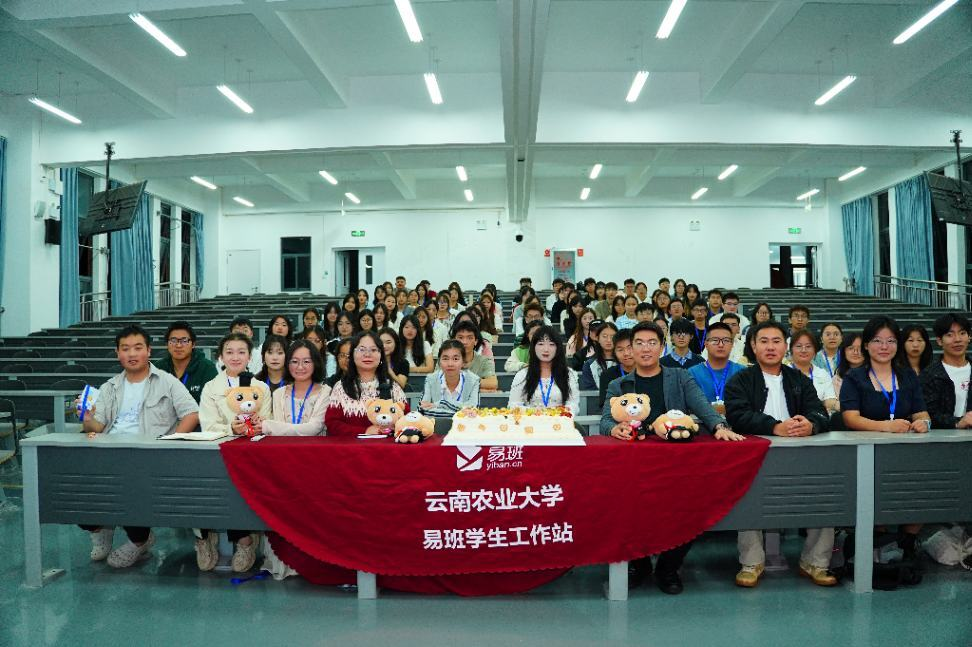
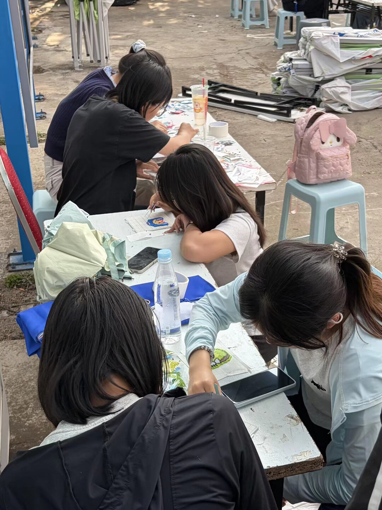
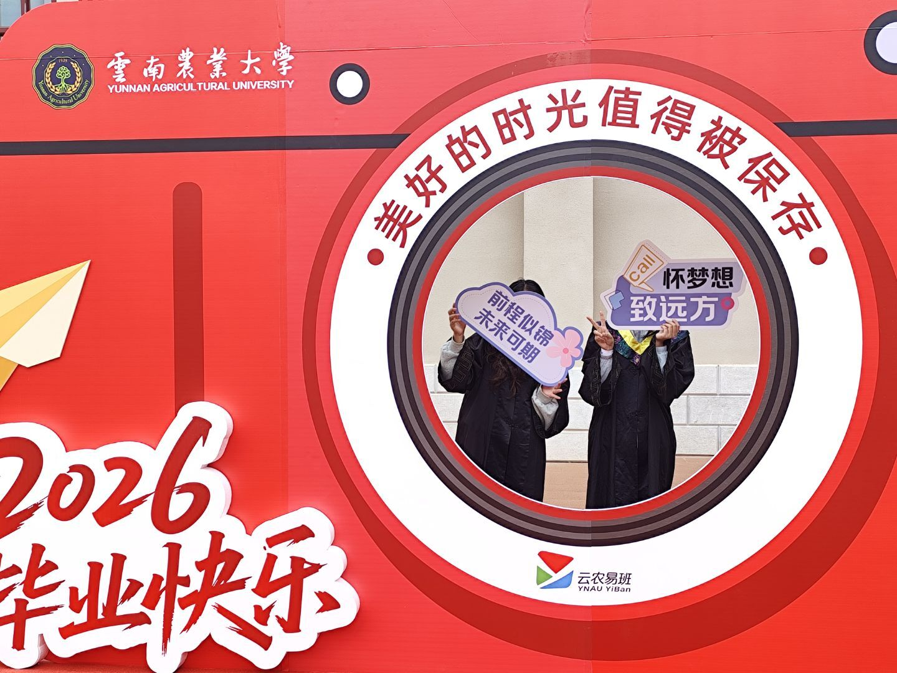

网络文化策划部
负责活动整体策划、流程设计，清点物资并统筹现场组织开展各项校园活动。

关于我们
服务师生，凝聚青年
云南农业大学易班学生工作站是在校易班建设工作领导小组统一领导、校易班发展中心直接指导下，依照“自我管理、自我服务、自我教育、自我成长”四项原则组建的校级学生组织。
工作站始终坚守服务广大师生的根本宗旨，立足校园网络思政阵地建设，积极探索高校新媒体平台创新运营模式。组织常态化开展各类线上线下校园文化活动，打造特色网络文化作品，丰富师生精神文化生活。
工作站凝聚青年学生力量，搭建师生沟通交流平台，积极弘扬正向校园风尚，持续助力校园文化高质量建设，为学校思想政治教育与校园文化发展贡献青年力量。
部门组成
各展所长，协同服务
从活动策划与视觉设计，到平台运营、内容发布和思政品牌建设，八个部门以明确分工服务校园师生。
负责活动整体策划、流程设计，清点物资并统筹现场组织开展各项校园活动。
设计活动海报、展板与非遗纹样参考图，完成各类活动视觉物料制作。
提前发布宣传推文，到场引导参与人员，维持现场秩序并做好活动预热宣传。
管理到梦空间活动发布，制作签到表，负责线上线下双重签到与物资登记。
活动现场拍摄照片、录制视频，后期剪辑素材并制作活动成果展示内容。
活动结束后排版、撰写总结推文，在易班等线上平台完成宣传发布工作。
运营易班优课学习平台，统筹线上课程开展，组织校内各类思政学习活动。
打造校园网络思政特色栏目，产出正向内容，搭建校园思政宣传品牌矩阵。
精彩瞬间
镜头里的易班
从观影心得分享、拍照打卡到赛前准备、集体下厨与校史馆参观，记录工作站服务校园、共创文化的每一个现场。
特色活动
把热爱放进生活

01本次非遗拼豆 DIY 活动面向全校学生，限 100 人线上报名。现场开展非遗纹样科普，提供全套材料供大家创作脸谱、民族图腾等拼豆作品，工作人员协助烫制定型，优秀作品集中展示。活动融合非遗文化与趣味手工，全程专人保障安全，线上线下同步宣传，以年轻化形式传承非遗。
查看活动报道
02本次活动面向 2026 届云农毕业生及全校师生，设双主题打卡区、留言墙、留声角，提供学士服、鲜花等道具免费拍照，可书写祝福、录制毕业感言。活动定格校园青春，后期制作纪念短片线上推送，以多元互动留存专属母校回忆，营造温情毕业氛围。
查看活动报道